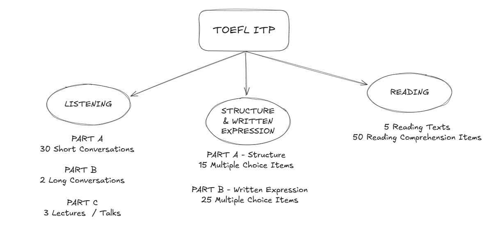

☰
ITP Calculator
Preparation Tips
Practice Tests
FAQ
Know Your Test
TOEFL ITP Sections and Parts

Practice Tips for Sections and Parts
Listening
Part A:
30 Short Conversations
Part B:
2 Long Conversations
Part C:
3 Lectures / Talks
Structure & Written Expression
Part A:
Structure (15 multiple-choice items)
Part B:
Written Expression (25 multiple-choice items)
Reading
5 Reading Texts and 50 Reading Comprehension Items (approximately 10 per each)